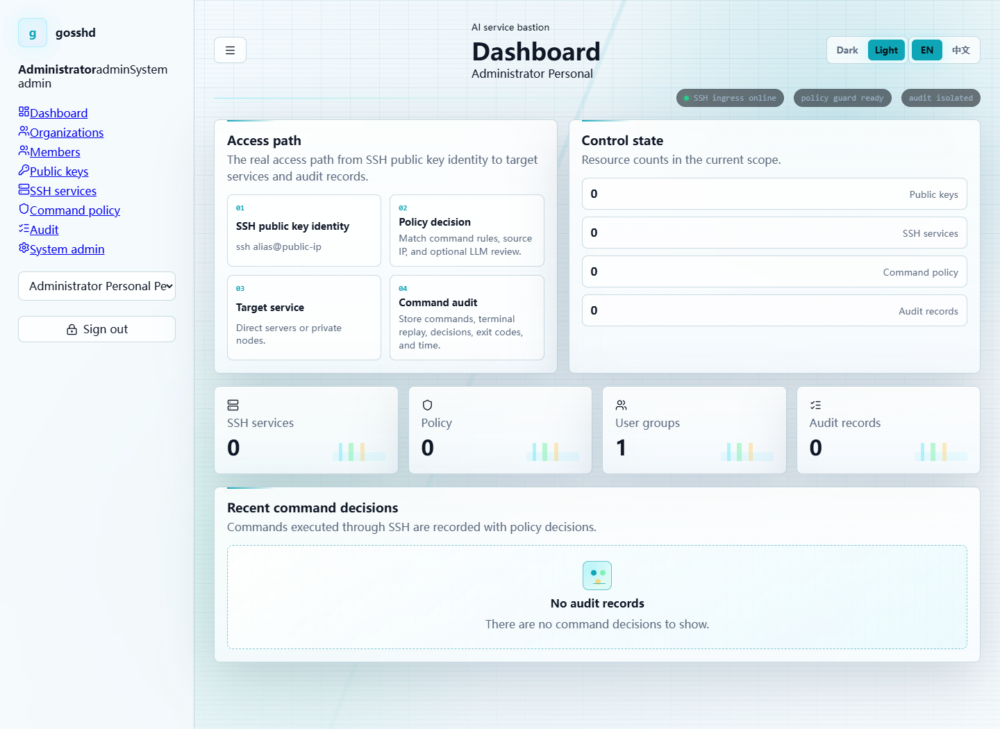

AI service bastion
GOSSHD Bastion
Give AI agents and operators SSH access that feels native, routes by alias, passes through command policy, and leaves an audit trail you can replay.
SSH ingress online
LLM guard armed
replay recorder active
01
Public key identifies the user
02
SSH username resolves the target alias
03
Policy and LLM review decide the command
04
Exec and terminal sessions are sealed for audit
Remote access, recorded
Run SSH the old way. Review it the new way.
Operators and AI tasks keep the simple command they already know. GOSSHD Bastion maps the key to a user, resolves the alias, applies safety groups, and stores terminal timing data for playback.
- Alias route
ssh inference-gpu@bastion- Recorder
- timestamped terminal frames
LLM command review
A command reaches production only after policy has a verdict.
Blacklists and whitelists make deterministic decisions first. Unmatched commands can be sent to an OpenAI-compatible model with your prompt, timeout, and fail-closed behavior.

Control console
The control plane is built into the server.
Manage organizations, user groups, public keys, targets, colored tags, private nodes, policy bindings, LLM configs, audit search, and terminal replay from the embedded web UI.

Alias-native access
Users connect with ssh alias@public-ip. The alias can point to a direct host or a private node.
Private service enrollment
Tokenized install commands register hosts behind NAT and can install startup services on Linux and Windows.
Command safety groups
Bind rules by targets, tags, user groups, source IP ranges, and capability switches like terminal or upload.
Automation control plane
Expose registration, targets, tags, policies, prompts, LLM configs, and audit queries through MCP.
First launch
Bring the bastion online.
gosshd-server \
--http-listen :18080 \
--ssh-listen :22022 \
--database-path ./data/gosshd.db \
--host-key-path ./data/gosshd_host_key \
--public-host bastion.example.com:18080